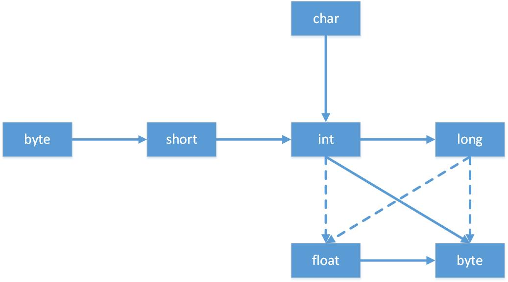

基本概念 ● 基本程序设计结构
Java白皮书用来解释设计的初衷以及完成的情况，Java设计者为此进行了编写并发布了一个简短的摘要。这个摘要用下面11个关键术语进行组织：
1.public class FirstSample {
2. public static void main(String[] args) {
3. System.out.println("Hello, World!");
4. }
5.}1./**
2. * This is the sample program
3. * @version 1.01 1997-03-22
4. */
5.public class FirstSample {
6. public static void main(String[] args) {
7. System.out.println("We will not use 'Hello, World!'")
8. }
9.}| 类型 | 存储需求 | 取值范围 |
|---|---|---|
| int | 4字节 | -2 147 483 648 ~ 2 147 483 647 |
| short | 2字节 | -32 768 ~ 32 767 |
| long | 8字节 | -9 223 372 036 854 775 808 ~ 9 223 372 036 854 775 807 |
| byte | 1字节 | -128 ~ 127 |
| 类型 | 存储需求 | 取值范围 |
|---|---|---|
| float | 4字节 | 大约±3.402 823 47E + 38F（有效位数为6~7位） |
| double | 8字节 | 大约±1.797 693 134 862 315 70E + 308（有效位数为15位） |
1.public class Constants {
2. public static void main(String[] args) {
3. final double CM_PER_INCH = 2.54;
4. double paperWidth = 8.5;
5. double paperHeight = 11;
6. System.out.println("Paper size in centimeters:"
7. + paperWidth * CM_PER_INCH + "by "
8. + paperHeight * CM_PER_INCH);
9. }
10.}1.int m = 7;
2.int n = 7;
3.int a = 2 * ++m; // now a is 16, m is 8
4.int b = 2 * n++; // now b is 14, n is 81.x<y ? x:y //return min of x and y如果n是一个整型变量，并且用二进制表示的n从右数第4位为1，则
1.int fourthBitFormRight = (n & 0b1000) / 0b1000;
2.int fourthBitFormRight = (n & (1 << 3)) >> 3;上述两条语句都将返回1。
对移位运算符右侧的参数需要进行模32的运算（除非左边的操作数是 long 类型，在这种情况下需对右侧操作数模 64）。例如，1<<35与1<<3是相同的。

在图中有6个实心箭头，表示无信息丢失的转换；有3个虚箭头，表示可能有精度损失的转换。例如，123 456 789是一个大整数，它所包含的位数比float类型所能表达的位数多。当将这个整型数值转换为float类型时，将会得到同样大小的结果，但却失去了一定的精度。
当使用两种数值进行二元操作时（例如n+f，n是整数，f是浮点数），先要将两个操作数转换为同一种类型，然后再进行计算。
• 如果两个操作数中有一个是double类型，另一个操作数就会转换为double类型。
• 否则，如果其中一个操作数是float类型，另一个操作数将会转换为float类型。
• 否则，如果其中一个操作数是long类型，另一个操作数将会转换为long类型。
• 否则，两个操作数都将被转换为int类型。
从概念上讲，Java字符串就是Unicode字符序列。Java没有内置的字符串类型，而是在标准Java类库中提供了一个预定义类，很自然地叫做String。每个用双引号括起来的字符串都是String类的一个实例。Java中，相比于字符型数组，字符串更加像char*指针。
String类的substring方法可以从一个较大的字符串提取出一个子串。substring方法的第二个参数是不想复制的第一个位置。这里复制的位置为0、1、2不包含3。
1.String greeting = "Hello";
2.String s = greeting.substring(0, 3);与绝大多数的程序设计语言一样，Java语言允许使用+号连接两个字符串。当将一个字符串与一个非字符串的值进行拼接时，后者被转换成字符串。
String类没有提供用于修改字符串的方法。由于不能修改Java字符串中的字符，所以在Java文档中将String类对象称为不可变字符串。虽然每次修改都相当于重新创建一个新字符串，但不可变字符串使得编译器可以让字符串共享。即将各种字符串存放在公共的存储池中，字符串变量指向存储池中相应的位置。如果复制一个字符串变量，原始字符串与复制的字符串共享相同的字符。
在Java中应使用equals方法检测两字符串是否相等。需要注意的是不能使用==运算符检测两个字符串是否相等，这个运算符只能够确定两个字符串是否放在同一个位置。如果虚拟机始终将相同的字符串共享，就可以使用==运算符检测是否相等。但实际只有字符串常量是共享的，而+或substring等操作产生的结果并不是共享的。
Java字符串由char序列组成。char数据类型是一个采用UTF-16编码表示Unicode代码点的代码单元。大多数的常用Unicode字符使用一个代码单元就可以表示，而辅助字符需要一对代码单元表示。
length方法将返回采用UTF-16编码表示的给定字符串所需要的代码单元数量。
1.String greeting = "Hello";
2.int n = greeting.length(); // is 5.要想得到实际的长度，即代码点数量，可以调用：
1.int cpCount = greeting.codePointCount(0, greeting.length());由于现有编码中存在不同的代码单元构成的字符，因此不建议使用char类型进行字符串内字码获取。要想得到第i个代码点，应该使用语句：
1.int index = greeting.offsetByCodePoints(0, i);
2.int cp = greeting.codePointAt(index);如果想要遍历一个字符串，并且依次查看每一个代码点，可以使用下列语句：
1.while(int i < sentence.length()) {
2. int cp = sentence.codePointAt(i);
3. if(Character.isSupplementaryCodePoint(cp)) i+=2;
4. else i++;
5.}
- char charAt(int index)
返回给定位置的代码单元。除非对底层的代码单元感兴趣，否则不需要调用这个方法。
- int codePointAt(int index)
返回从给定位置开始或结束的代码点。
- int offsetByCodePoints(int startIndex, int cpCount)
返回从startIndex代码点开始，位移cpCount后的代码点索引。
- int compareTo(String other)
按照字典顺序，如果字符串位于other之前，返回一个负数；如果字符串位于other之后，返回一个正数；如果两个字符串相等，返回0。
- boolean endWith(String suffix)
如果字符串以suffix结尾，返回true。
- boolean equals(Object other)
如果字符串与other相等，返回true。
- boolean equalsIgnoreCase(String other)
如果字符串与other相等（忽略大小写），返回true。
- int indexOf(String str)
- int indexOf(String str, int fromIndex)
- int indexOf(int cp)
- int indexOf(int cp, int fromIndex)
返回与字符串str或代码点cp匹配的第一个子串的开始位置。这个位置从索引0或fromIndex开始计算。如果在原始串中不存在str，返回-1。
- int lastIndexOf(String str)
- int lastIndexOf(String str, int fromIndex)
- int lastIndexOf(int cp)
- int lastIndexOf(int cp, int fromIndex)
返回与字符串str或代码点cp匹配的最后一个子串的开始位置。这个位置从原始串尾端或fromIndex开始计算。
- int length()
返回字符串的代码单元长度。
- int codePointCount(int startIndex, int endIndex)
返回startIndex和endIndex-1之间的代码点数量。没有配成对的代用字符将计入代码点。
- String replace(CharSequence oldString, CharSequence newString)
返回一个新字符串。这个字符串用newString代替原始字符串中所有的oldString。可以用String或StringBuilder对象作为CharSequence参数。
- boolean startsWith(String prefix)
如果字符串以prefix字符串开始，返回true。
- String substring(int beginIndex)
- String substring(int beginIndex, int endIndex)
返回一个新字符串。这个字符串包含原始字符串从beginIndex到串尾或endIndex-1的所有代码单元。
- String toLowerCase()
返回一个新字符串。这个字符串将原始字符串中的所有大写字母改成了小写字母。
- String toUpperCase()
返回一个新字符串。这个字符串将原始字符串中的所有小写字母改成了大写字母。
- String trim()
返回一个新字符串。这个字符串将删除原始字符串头部和尾部的空格。
每次连接字符串，都会构建一个新的String对象，使用StringBuilder类则可以避免这个问题的发生。在需要构建字符串时调用toString方法，将可以得到一个String对象，其中包含了构建器中的字符序列。
- StringBuilder()
构造一个空的字符串构建器。
- int length()
返回构建器或缓冲器中的代码单元数量。
- StringBuilder append(String str)
追加一个字符串并返回this。
- StringBuilder append(char c)
追加一个代码单元并返回this。
- StringBuilder appendCodePoint(int cp)
追加一个代码点，并将其转换为一个或两个代码单元并返回this。
- void setCharAt(int i, char c)
将第i个代码单元设置为c。
- StringBuilder insert(int offset, String str)
在offset位置插入一个字符串并返回this。
- StringBuilder insert(int offset, Char c)
在offset位置插入一个代码单元并返回this。
- StringBuilder delete(int startIndex, int endIndex)
删除偏移量从startIndex到endIndex-1的代码单元并返回this。
- String toString()
返回一个与构建器或缓冲器内容相同的字符串。
1.import Java.util.*;
2.
3./**
4. * This program demonstrates console input.
5. * @version 1.10 2004-02-10
6. * @author Cay Horstmann
7. */
8.public class InputTest {
9. public static void main(String[] args) {
10. Scanner in = new Scanner(System.in);
11. System.out.print("What is your name?");
12. String name = in.nextLine();
13. System.out.print("How old are you?");
14. int age = in.nextInt();
15. System.out.println("Hello, " + name + ". Next year, you'll be " + (age + 1));
16. }
17.}在printf中，可以使用多个参数，例如：
1.System.out.printf("Hello, %s. Next year, you'll be %d", name, age);每一个以%字符开始的格式说明符都用相应的参数替换。格式说明符尾部的转换符将指示被格式化的数值类型。下表列出了所有转换符。
| 转换符 | 类型 | 举例 |
|---|---|---|
| d | 十进制整数 | 159 |
| x | 十六进制整数 | 9f |
| o | 八进制整数 | 237 |
| f | 定点浮点数 | 15.9 |
| e | 指数浮点数 | 1.59e+01 |
| g | 通用浮点数 | —— |
| a | 十六进制浮点数 | 0x1.fccdp3 |
| s | 字符串 | Hello |
| c | 字符 | H |
| b | 布尔值 | True |
| h | 散列码 | 42628b2 |
| tx | 日期时间 | —— |
| % | 百分号 | % |
| n | 与平台有关的行分隔符 | —— |
返回这个大整数和另一个大整数other的和。
返回这个大整数和另一个大整数other的差。
返回这个大整数和另一个大整数other的积。
返回这个大整数和另一个大整数other的商。
返回这个大整数和另一个大整数other的余数。
如果这个大整数与另一个大整数other相等，返回0；如果这个大整数小于另一个大整数other，返回负数；否则，返回正数。
返回值等于x的大整数。
返回这个大实数和另一个大实数other的和。
返回这个大实数和另一个大实数other的差。
返回这个大实数和另一个大实数other的积。
返回这个大实数和另一个大实数other的商。
如果这个大实数和另一个大实数other相等，返回0；如果这个大实数小于另一个大实数，返回负数；否则，返回正数。
数组是一种数据结构，用来存储同一类型值的集合。通过一个整型下标可以访问数组中的每一个值。创建一个数字数组时，所有元素都初始化为0.boolean数组的元素会初始化为false。对象数组的元素则初始化为null，这表示这些元素还未存放任何对象。
一旦创建了数组，就不能再改变它的大小。如果经常需要在运行过程中扩展数组的大小，则应使用另一种数据结构——数组列表（array list）。
在Java中，提供了一种创建数组对象并同时赋予初始值的简化书写形式。使用这种语句时，不需要调用new。
1.int[] smallPrimes = {2, 3, 5, 7, 11, 13};
2.new int[] {2, 3, 5, 7, 11, 13};如果希望将一个数组的所有值拷贝到一个新的数组中去，就要使用Arrays类的copyOf方法：
1.int[] copiedLuckyNumbers = Arrays.copyOf(luckyNumbers, luckyNumbers.length);第2个参数是新数组的长度，这个方法通常用于增加数组的大小。如果数组元素是数值型，那么多余的元素将被赋值为0；如果数组元素是布尔型，则将赋值为false；相反，如果长度小于原始数组的长度，则将只拷贝最前面的数据元素。
要想对数值型数组进行排序，可以使用Arrays类中的sort方法。该方法使用了优化的快速排序算法。
返回包含a中数据元素的字符串，这些数据元素被放在括号内，并用逗号分隔。
| a | 类型为int、long、short、char、byte、boolean、float或double的数组。 |
返回与a类型相同的一个数组，其长度为length或者end-start，数组元素为a的值。
| a | 类型为int、long、short、char、byte、boolean、float或double的数组。 |
| start | 起始下标(包含这个值）。 |
| end | 终止下标（不包含这个值）。这个值可能大于a.length。在这种情况下，结果为0或false。 |
| length | 拷贝的数据元素长度。如果length值大于a.length，结果为0或false；否则，数组中只有前面length个数据元素的拷贝值。 |
采用优化的快速排序算法对数组进行排序。
| a | 类型为int、long、short、char、byte、boolean、float或double的数组。 |
采用二分搜索算法查找值v。如果查找成功，则返回相应的下标值；否则，返回一个负数值r。-r-1是为保持a有序v应插入的位置。
| a | 类型为int、long、short、char、byte、boolean、float或double的有序数组。 |
| start | 起始下标（包含这个值）。 |
| end | 终止下标（不包含这个值）。 |
| v | 同a的数据元素类型相同的值。 |
将数组的所有数据元素值设置为v
| a | 类型为int、long、short、char、byte、boolean、float或double的数组。 |
| v | 同a的数据元素类型相同的值。 |
如果两个数组大小相同，并且下标相同的元素都对应相等，返回true。
| a、b | 类型为int、long、short、char、byte、boolean、float或double的两个数组。 |